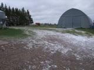
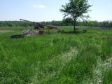
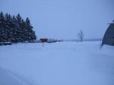
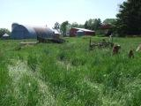
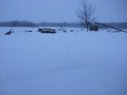
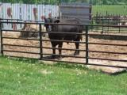
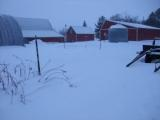

The Farm



The farm is well into its second generation of Popp care and direction. It consists of one cow barn, two pig barns, a granary, quonset, two pastures, 9 fields (depending on how you count them), 5 working tractors, several miles of high quality fence line, one dog, many cats, a four-wheeler, and many friendly cows.
See Leonard Popp for tour information.
View The Farm in a larger map